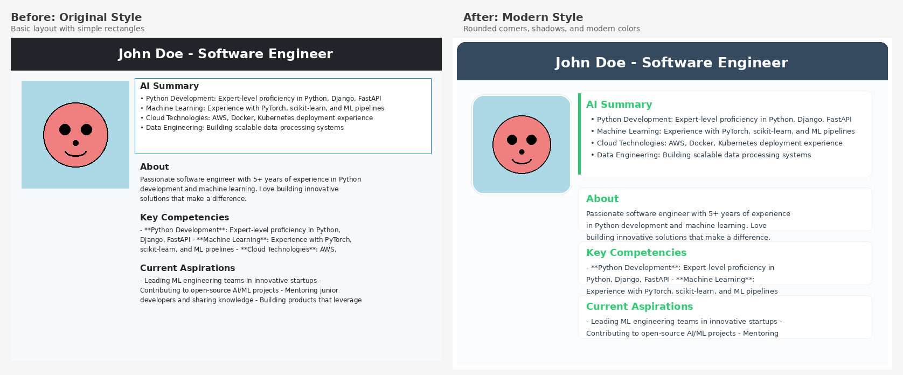

🎴 CardForge Style Improvements

✨ Key Improvements Made
- Rounded Corners - Added modern rounded corners to the main card and sections
- Drop Shadow - Subtle shadow effect for depth and elevation
- Modern Color Palette - Updated to contemporary colors with better contrast
- Rounded Profile Image - Circular profile photo with white border
- Improved Typography - Better font sizes and line spacing for readability
- Enhanced Spacing - More generous margins and padding throughout
- Accent Elements - Green accent color bars for visual interest
- Better Section Design - Cleaner section backgrounds with subtle borders
- Professional Layout - More balanced proportions and alignment